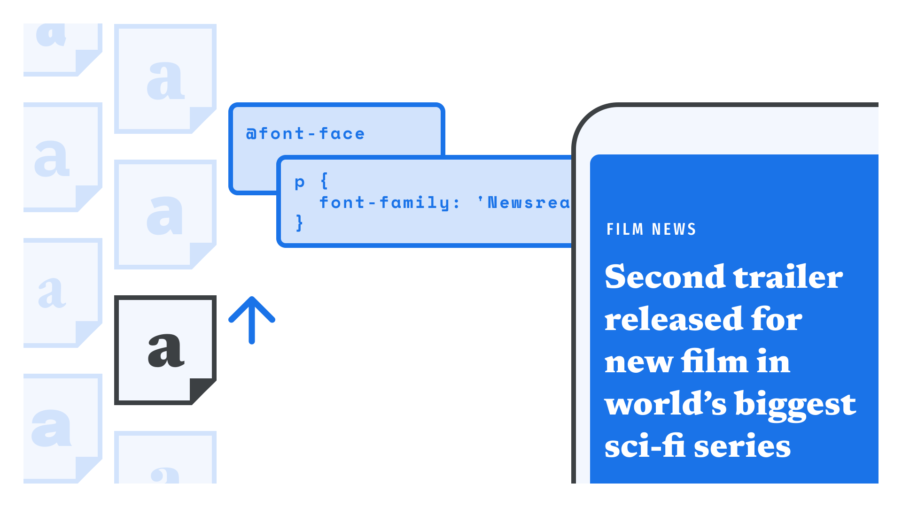

Self-hosting web fonts
By Elliot Jay Stocks · Google Fonts Knowledge.
Reviewed by Bram Stein, Laurence Penney, Trent Walton.
Original article · Source on GitHub · CC BY-SA 4.0. Text, illustrations and existing credits reproduced from the licensed Knowledge repository. Open Shelf adapted the layout and links; these adaptations are also CC BY-SA 4.0. No endorsement implied.
If you’d prefer to host the web fonts you use on your own server (or if those fonts simply aren’t available on a font delivery service), we’ve prepared a quick guide on how to get the most out of self-hosting web fonts.

First, let’s choose our typeface(s). If it’s available for free from a service such as Google Fonts, downloading the files means agreeing to the terms of the font license(s). For fonts that aren’t free, we’ll need to purchase the license(s) we need. Usually, licenses are for a specific number of unique visitors to our website per month, so we should purchase the one that most accurately reflects our anticipated traffic. (If our traffic grows, we’ll need to buy a new license.) Once we’ve completed the purchase, we’ll be given font files to download.
Once we’ve downloaded our font files, we’ll move them to our local development project, and make a note of their location (specifically, relative to the CSS file in which we’ll reference them).
The main difference between implementing web fonts that we host ourselves versus those from a web font delivery service, such as Google Fonts or Adobe Fonts, is that there’s no need to reference a third-party service in the <head> of your HTML document—you can simply add @font-face code to one of your own stylesheets. In fact, many foundries provide CSS files as part of their web font packages that we can include in our project alongside the fonts. Whether we’re using a third-party service or self-hosting, once we’ve linked to the fonts, we can go straight to assigning the font files to our families and variations.
The CSS to use is effectively the same as what’s provided by the font delivery services, which we highlight in our article “Using web fonts from a font delivery service”.
The only real difference is that the path to the font file (i.e., src) will be a relative URL (e.g. ../fonts/FONT_FILE_NAME.woff2) rather than an absolute URL (e.g. https://fonts.gstatic.com/[...]/FONT_FILE_NAME.woff2).
From there, defining our typographic styles in CSS is exactly the same, regardless of where the font file is hosted.
For more information on how to optimize loading for self-hosted fonts, see "The Best Font Loading Strategies and How to Execute Them" on CSS Tricks.